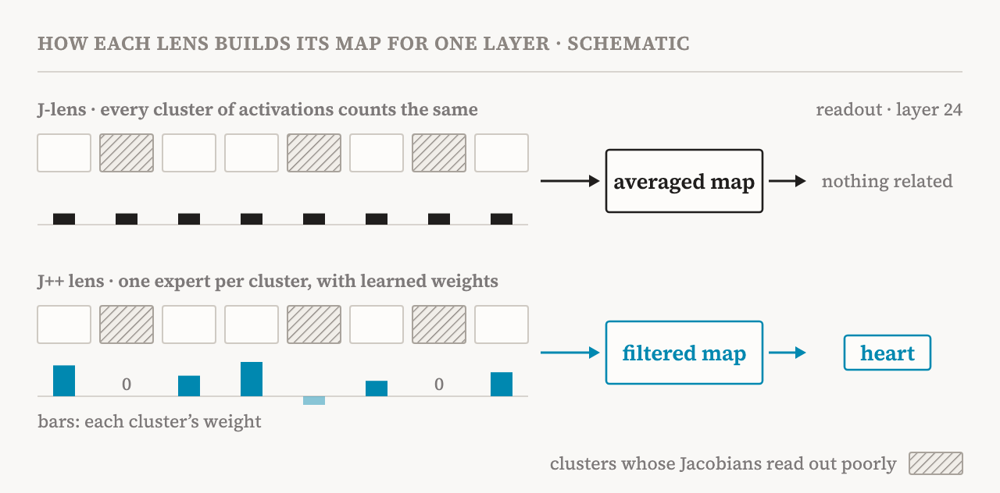
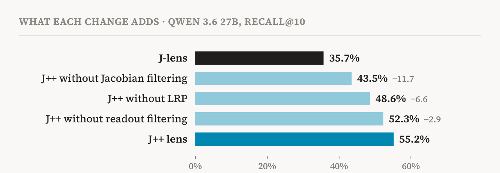
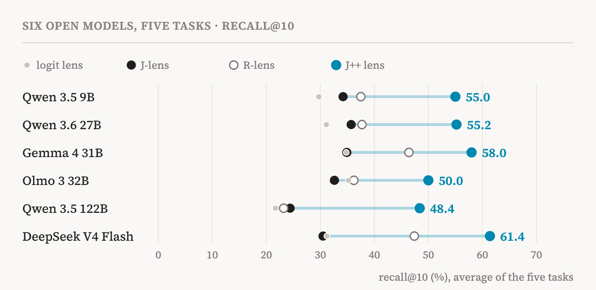

In July 2026, Anthropic's interpretability team introduced the Jacobian lens, or J-lens, a tool for reading the middle of a language model as words. I wrote a close reading of that paper here earlier. Its picture was striking: inside the model sits a small set of representations it can put into words, and it uses them to report, to steer its own thinking and to reason. That looks a lot like the global workspace of consciousness science.
The picture had a weak spot, though. The J-lens reads clearly only in the second half of the layers, and many of the intermediate steps you would expect to find never show up. In October, Kola Ayonrinde and Jack Lindsey published the J++ lens, a project of the Anthropic Fellows Program, which argues that much of this weakness belongs to the tool, not the model. This piece reads the post and its appendices closely: what changed, how much it helps, how far to trust the numbers, and what it adds to the debate about AI consciousness.
A blurry lens
First, a short reminder of how the J-lens works. As a language model reads text, it gives every token a state of a few thousand numbers, the residual stream, and each layer refines that state. The lens asks: if this middle-layer state were nudged slightly in some direction, how would the model's predictions at the last layer change, for this token and the ones after it? That sensitivity is a Jacobian. Averaged over many texts and positions, it gives one linear map per layer. Multiply a state by the map, then by the model's own output matrix (the unembedding), and you get a ranking of the words the model is disposed to say. That ranking is the lens's readout.
The simplest form of this idea, the logit lens, skips the map and reads a middle state as if it were the last one. The J-lens does better in later layers. But in the first part of the network its readouts are often noise, and the intermediate step is often missing. Ask how many chambers the organ that pumps blood has, and the bridge, ‘heart’, should appear before the answer, four. In Qwen 3.6 27B, the J-lens reaches only related words, and only from layer 40 of 64.
Why the misses? The authors list four possibilities. The workspace may be a poor model of how language models think. The variable may be there but not readable by a linear map. The model may not represent it at all, for example because it found a shortcut. Or the lens may simply be an imperfect tool. The J++ post makes the case for the last.
Why the average goes wrong
The J-lens counts every Jacobian equally. If the errors in single Jacobians were random, they would cancel out in the average. But averaging removes only unbiased noise. If some activations reliably give bad Jacobians, with errors that point the same way every time, the average keeps them.
The authors found such activations. They split the activations at each layer into 8 groups by k-means clustering and fitted a separate averaged Jacobian, an expert, on each group. Then they used each expert alone as a lens on every test item, not just on items from its own group. The results varied enormously. Only 24 of the 52 experts beat a single map pooled over all activations, and 17 scored below 2%. Early layers were worse: at layers 8 and 16, 10 of the 16 experts were below 2%. Many bad experts were ‘formatting experts’, fitted mostly on punctuation and whitespace, but not all of them. What makes an expert bad is still unclear.

Their explanation is geometric. A Jacobian is a linear approximation, accurate only where the function is close to flat. Around some activations, the path from the middle layer to the output may bend sharply, and there the approximation is poor. Mixed into the average, those regions blur the whole map.
A second source of noise is the backward pass itself. With the ordinary gradient, the size of the gradients explodes toward early layers. The further back the lens reaches, the more error piles up on the way, which fits the J-lens being weakest exactly there.
Three fixes
The J++ lens makes three changes, each aimed at one of these problems.
Jacobian filtering. Fit the 8 experts per layer as above, then combine them with learned weights instead of equal ones. The weights are fitted on a small development set of extraction problems, kept apart from the test items, and in practice they mostly decide which experts get zero or even negative weight. The result is again one map per layer, so the lens costs nothing extra to use.
An LRP backward pass. This comes from the R-lens, published in August by Camila Blank, Agam Bhatia and Neel Nanda. Layer-wise relevance propagation (LRP) puts stop-gradients into parts of the backward pass, such as the normalisation layers and the gated MLPs, so errors do not compound. With it, gradients grow up to 5× more slowly toward early layers.
Readout filtering. A few tokens with no letter or digit, such as semicolons and spaces, sit near the top of many readouts whatever the context. The J++ lens drops all 6,116 such tokens from the ranking.
The authors measured each change by removing it alone (Fig. 2). Removing Jacobian filtering costs the most: recall falls by 11.7 points, 60% of the 19.5-point gain over the J-lens. Removing LRP costs 6.6 points, and removing readout filtering 2.9.

The recipe is cheap. Each lens was fitted on just 64 passages of 128 tokens from Wikipedia articles (WikiText-103), 7,104 positions in all. For Qwen 3.6 27B, fitting every layer took about 9 GPU-hours on H200s, about 7% more than a J-lens on the same data.
How much better
The main test uses five kinds of problems, adapted from the J-lens paper. Multihop: two-step factual questions, where the bridging concept should appear. Multilingual: questions in another language, where the English concept should appear. Typo: sentences ending in a misspelling, where the correctly spelled word should appear. Association: short passages that depict a concept without naming it. Poetry: rhyming couplets, where the rhyme word should appear before the second line is written. An item counts as a hit if the target word is in the lens's top 10 at any of 7 layers (recall@10).
In Qwen 3.6 27B, the J++ lens scores 55.2% on average across the five tasks, against 35.7% for the J-lens and 37.7% for the R-lens. It leads on every task and at every layer, and the lead is largest in the first quarter of the layers. In the heart example, the J++ lens reads ‘heart’ at layer 24; the J-lens reached related words only at layer 40.
| Task | J-lens | R-lens | J++ lens |
|---|---|---|---|
| Multihop | 56.1 | 59.2 | 67.3 |
| Multilingual | 47.4 | 47.4 | 74.6 |
| Typo | 60.4 | 66.7 | 91.7 |
| Association | 10.8 | 12.7 | 37.3 |
| Poetry | 3.7 | 2.5 | 4.9 |
| Average of the five | 35.7 | 37.7 | 55.2 |
The result holds across six open models from Qwen, Google (Gemma), Ai2 (Olmo) and DeepSeek, from 9 to 284 billion parameters (Fig. 3). The median gain over the J-lens is 63.5%. On the two largest models the score roughly doubles: on DeepSeek V4 Flash it goes from 30.5% to 61.4%. The authors suggest the advantage may grow with scale. With six models, that is a hint rather than a trend.

Reading is only half the job. A lens vector should also act as its concept when written into the model. The swap test from the J-lens paper replaces the lens vector of one bridging concept with another's and checks whether the answer changes to match. J++ vectors made the swapped-in answer the top word in 59.7% of 67 trials, against 49.3% for the J-lens and 50.7% for the R-lens. The better readouts did not cost causal power.
Don't think of a white bear
A better tool is worth most when it shows something new. The authors' case study starts from a curious result in the J-lens paper. When a model was told to think about a concept while copying an unrelated sentence, the concept appeared in its workspace. When it was told not to think about it, the concept often appeared anyway. People do the same. Told not to think of a white bear, they think of it more, an effect the psychologist Daniel Wegner studied for years.
The authors propose a ‘retrieve-then-suppress’ mechanism. Any instruction about a concept first brings it into the workspace. Only later is it turned up or down, and turning it down uses that early representation. If so, suppression is active work that needs the workspace, which would explain why the concept shows up while being avoided. The hypothesis makes three predictions, and the authors found evidence for each, though in some cases of suppression, not all.
| Prediction | What they found |
|---|---|
| Told to focus on a concept or to avoid it, the model first brings it into the workspace | Under focus, a neutral mention and suppression alike, the concept is well above the no-instruction baseline by layer 24. With the J-lens it shows only from layer 40 |
| Under suppression, it stops growing in later layers | Under focus it keeps rising, to 26% by layer 56. Under suppression it levels off at 7–8%, and after a neutral mention it falls from 14% to 8% |
| Removing it early disrupts the suppression | Clamped out at layers 16–28 under suppression, its rank rises over the next 16 layers instead of falling. When the model must avoid an implied concept, removing it early raises its probability by 2.8 points beyond a control (0.36 with the J-lens, not significant) |
The last row is the strongest test. In a task from the J-lens paper, a sentence implies a concept, as ‘fresh croissants, the Louvre, and a climb up the famous iron tower’ implies France. The model is asked either to name it or to name something the sentence does not describe. Removing France from the early workspace barely affected naming it, but it made the model worse at avoiding it. The early workspace mattered for avoiding the concept, not for naming it.
The authors note that this would have been hard to see with the J-lens, whose early readouts are weak and whose early interventions barely work. That is the real case for a better lens: it changed what could be found.
Points to weigh
First, a little supervision has crept in. The J-lens learns nothing from labels. The J++ lens fits its expert weights on a development set built from the same five kinds of problems, with different items. The authors check this well. When the weights for each task are fitted without any items of that task, the score drops only from 55.2% to 54.4%, and simply picking the best expert in each layer still gives 50.2%. With only 8 weights per layer, there is little room to overfit. Still, the lens now prefers experts that are good at finding the kinds of concepts we chose to look for. Whether it is just as good at surfacing what nobody thought to test, such as signs that a model knows it is being evaluated, is an open question.
Second, the main score is generous. A hit anywhere in the top 10, at any of seven layers, is a low bar. By this score even the logit lens, with no map at all, has a median of 31.2% across the six models against 33.4% for the J-lens, and it beats the J-lens on 2 of them. In the swap test the logit lens is far behind (22.4% against 49.3%). So readout scores alone separate lenses less sharply than they seem, and the causal test deserves more weight than its single line in the summary.
Third, that causal test is small. 59.7% against 49.3% of 67 trials is 40 successes against 33. The authors' own wording, that J++ vectors are at least as causally important, is the fair reading. It is not strong evidence that they are better levers.
Fourth, the numbers belong to one recipe. Every J++ lens was fitted on 64 short Wikipedia passages. The authors' own scaling test shows that longer passages help and have not levelled off yet, and an audit of the J-lens on Pythia models (Gupta, NeurIPS 2026 workshop) found that changing only the fitting texts moved the score from 22.8 to 26.0. On the main model, the authors refitted the J-lens and R-lens on the same data for a fair comparison. On the other five, they compared against released lenses fitted on other data (the R-lenses on 25 prompts). They also report that the released J-lens for Qwen 3.6 27B did worse than their own refit. That aside is itself a warning: how a lens is fitted can matter as much as which lens it is.
Fifth, it reaches neither Claude nor ideas longer than a token. All six models are open models. The J-lens paper's strongest results, on report and on reflection training, came from Claude, so the J++ lens cannot recheck them directly. And it still reads single tokens: rhymes stay near 5%, and multi-digit numbers could not even be tested in Qwen, which splits numbers into digits.
Finally, its status. This is an Anthropic Fellows project, announced in Anthropic's informal research update and posted on LessWrong, and it has not been peer reviewed. The counterweight is that everything is open: the code (Apache 2.0), the fitted lenses and an interactive demo. Anyone can check it.
What it means for the consciousness debate
The J-lens paper's claim was about access, not experience: there is a set of representations that behaves like a global workspace. The J++ lens bears on that claim in three ways.
First, it shows that the tool drew part of the workspace's border. The J-lens paper split the network into sensory, workspace and motor regions, and the earliest region was where the lens read almost nothing. The J++ lens finds intermediate concepts much earlier, and the authors conclude that the workspace holds useful content earlier than the J-lens suggested. How large the ‘sensory’ region is, then, is partly a statement about the lens.
Second, it adds a parallel in function. In global workspace theory, conscious access is what makes flexible control possible, such as deciding not to act on a thought. Retrieve-then-suppress has that shape: to avoid a concept, the model first brings it into the workspace and then uses it to hold the concept down, much like the white bear effect in people. Still, this is a likeness in function. It says nothing about whether anything is felt.
Third, the authors themselves raise a point that cuts the other way. If the J-lens counts as evidence, a more faithful lens should count as more evidence in the same direction. But the logit lens, the J-lens, the R-lens and the J++ lens, though built in different ways, all seem to find something with workspace-like properties. Perhaps, they write, global workspaces “come on the cheap”, and so are less likely to be enough for consciousness. They suggest testing whether these candidate workspaces converge on the same subspace as models grow. I think that is the right next question. If they converge, the workspace is a real structure in the model, and the lenses are different views of it. If they do not, each lens may be finding a version of its own, and the evidence from any one of them counts for less.
What it means
The deepest lesson is about measurement. When the J-lens failed to show an intermediate step, it was tempting to read that as the model not having it. The J++ lens shows that much of what looked absent was there, and the tool missed it. In interpretability, the instrument is part of every finding, and improving it can change the findings, as the white bear result shows.
For safety, the stakes are practical. As models do more reasoning without writing it down, a cheap linear readout of what they are disposed to say becomes more valuable, for example for spotting a model that silently notices it is being tested. The J++ lens is a drop-in upgrade for that use. The authors are careful here too: it is not yet clear that even this readout is good enough for real monitoring.
The next steps are clear from the post: lenses that read whole phrases instead of single tokens, better ways than k-means to split the activations (more experts already help: with 32 instead of 8, recall reaches 59.9%), and an account of why some activations give bad gradients.
“Before reading what a model thinks, check what your lens can see.”
This piece was written with Claude's help. Claude is made by Anthropic, which runs the fellowship behind this project, provided its compute and employs one of its authors, so please read with that in mind. Every number comes from the post's main text and appendices, and each interpretation names its source.